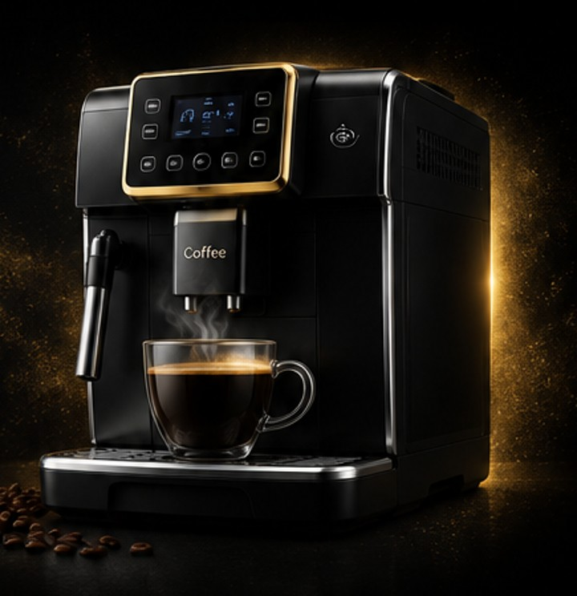

REGENERACJA ZAPARZACZA
Cena zależna od modelu ekspresu
100–150 zł
- demontaż zaparzacza
- czyszczenie elementów
- kontrola stanu technicznego
- wymiana zużytych uszczelnień w zakresie regeneracji
- smarowanie i ponowny montaż
- sprawdzenie działania
Diagnostyka, czyszczenie, odkamienianie i naprawa automatycznych ekspresów do kawy. Czechowice-Dziedzice, Pszczyna, Bielsko-Biała i okolice.

Zadzwoń lub napisz. Opisz markę, model i problem.
Dostarcz ekspres do serwisu.
Sprawdzamy urządzenie i wykonujemy uzgodniony serwis.
Sprawdzamy szczelność, działanie i jakość parzenia.
Odbierasz sprawny i przygotowany ekspres.
SerwisCoffee • Czechowice-Dziedzice i okolice
SerwisCoffee pomaga przywrócić ekspres do kawy do prawidłowej pracy. Gdy chcesz, aby Twój ekspres znów działał jak nowy, zacznij od rzetelnej diagnostyki, a następnie dobierz odpowiedni zakres naprawy lub konserwacji. Oferujemy diagnostykę, naprawę i konserwację automatycznych ekspresów do kawy. Obsługujemy klientów z Czechowic-Dziedzic oraz okolic, w tym z Pszczyny i Bielska-Białej. Naszym celem jest ustalenie przyczyny problemu, przedstawienie zakresu prac i przywrócenie prawidłowego działania urządzenia.
Zajmujemy się ekspresami takich marek jak DeLonghi, Siemens, Bosch, Melitta i Jura. W przypadku każdego urządzenia znaczenie ma jego model, stan techniczny oraz objawy zgłaszanej usterki. Dlatego naprawę rozpoczynamy od diagnostyki, a zakres dalszych prac dobieramy do rzeczywistej potrzeby. Przed rozszerzeniem naprawy ustalamy z klientem zakres i wycenę.
Nieprawidłowa praca ekspresu może objawiać się między innymi problemami z przepływem wody, przygotowaniem kawy, pracą młynka lub działaniem układu mlecznego. Przyczyną mogą być zabrudzenia, osady powstałe podczas użytkowania, zużycie elementów albo usterka konkretnego podzespołu. Sama obserwacja objawów nie zawsze wystarcza do wskazania przyczyny, dlatego ważne jest sprawdzenie urządzenia przed podjęciem naprawy.
Po ustaleniu przyczyny wykonujemy uzgodnione czynności serwisowe. W zależności od stanu ekspresu mogą one obejmować czyszczenie układu kawowego, kontrolę i konserwację zaparzacza, sprawdzenie młynka, czyszczenie układu mlecznego lub prace związane z przepływem wody. Po zakończeniu prac sprawdzamy działanie urządzenia i wykonujemy test parzenia.
Regularna pielęgnacja ekspresu pomaga ograniczać osadzanie się zanieczyszczeń i kamienia oraz utrzymywać urządzenie w dobrym stanie. W ramach serwisu wykonujemy odkamienianie układu, czyszczenie zaparzacza, układu kawowego, wylewki i tacki, a w odpowiednim zakresie także czyszczenie układu mlecznego. Zakres czynności zależy od wybranego pakietu i stanu konkretnego ekspresu.
Zaniedbane czyszczenie może wpływać na przepływ wody, pracę poszczególnych elementów i komfort codziennego użytkowania. Jeśli ekspres przygotowuje mniej kawy niż zwykle, nie spienia mleka prawidłowo, kieruje wodę do tacki lub sygnalizuje potrzebę serwisu, warto opisać objawy i skonsultować urządzenie.
Oferujemy regenerację zaparzacza w cenie od 100 do 150 zł, zależnie od modelu ekspresu. Serwis BASIC kosztuje 250 zł, a serwis PREMIUM dla ekspresów Jura jest dostępny promocyjnie za 300 zł zamiast 350 zł. Zakres prac zależy od modelu i stanu technicznego urządzenia. Szczegóły znajdziesz w sekcji oferta i ceny. Jeśli nie wiesz, która usługa będzie odpowiednia, skontaktuj się z nami – pomożemy ustalić właściwy zakres po poznaniu objawów.
Do serwisu warto zgłosić urządzenie, które nie pobiera wody, przygotowuje kawę o zmienionej objętości, pracuje głośniej niż wcześniej albo przerywa cykl parzenia. Niepokojącym sygnałem może być również wyciek pod ekspresem, woda gromadząca się w tacce ociekowej, komunikat o błędzie lub brak prawidłowej pianki mlecznej. Każdy z tych objawów może mieć kilka przyczyn. Dlatego nie zakładamy z góry, że konieczna jest wymiana konkretnej części. Najpierw zbieramy informacje o modelu i zachowaniu urządzenia, a następnie ustalamy możliwy zakres sprawdzenia.
Jeżeli ekspres uruchamia się, ale kawa nie wypływa, przyczyną może być zabrudzenie, zablokowanie przepływu lub problem z jednym z podzespołów. Gdy urządzenie nie spienia mleka, należy zwrócić uwagę na czystość elementów układu mlecznego oraz drożność przewodów. Głośna praca młynka, nierówne mielenie albo zbyt mała ilość kawy w filiżance również wymagają oceny w kontekście konkretnego modelu. Opis objawów pomaga przygotować się do diagnostyki, ale nie zastępuje sprawdzenia ekspresu.
W SerwisCoffee przyjmujemy zgłoszenia dotyczące automatycznych ekspresów popularnych producentów, między innymi DeLonghi, Siemens, Bosch, Melitta oraz Jura. Rozwiązania konstrukcyjne i procedury konserwacji różnią się między seriami, dlatego przed rozmową warto odczytać dokładny model z tabliczki znamionowej lub obudowy. Przyspieszy to wstępne ustalenie, jakich informacji potrzebujemy i czy zgłaszany problem można powiązać z typowymi czynnościami serwisowymi dla danego urządzenia.
Nie każdy komunikat na wyświetlaczu oznacza poważną awarię. Czasami urządzenie przypomina o czynnościach konserwacyjnych, a czasami informuje o problemie, który wymaga dokładniejszej kontroli. Nie zalecamy pomijania komunikatów ani wielokrotnego uruchamiania ekspresu, jeśli pojawia się wyciek, nietypowy hałas lub zapach przegrzania. W takiej sytuacji najlepiej przerwać użytkowanie i skontaktować się z serwisem.
W ekspresie pracują elementy mające stały kontakt z wodą, kawą i mlekiem. Z czasem w urządzeniu mogą gromadzić się osady, resztki kawy i pozostałości mleka. Regularne czyszczenie zgodne z zaleceniami producenta pomaga utrzymać higienę i ograniczać odkładanie się zanieczyszczeń. Odkamienianie powinno być dopasowane do twardości wody, częstotliwości użytkowania oraz wskazań urządzenia. Nie należy stosować przypadkowych środków ani mieszać preparatów o nieznanym składzie.
Warto pamiętać, że czyszczenie użytkownika i serwis techniczny to różne czynności. Codzienne opróżnianie tacki, płukanie elementów dostępnych bez narzędzi i stosowanie programu czyszczenia są ważne, ale nie zawsze wystarczają. W zależności od konstrukcji ekspresu okresowo potrzebna może być kontrola zaparzacza, uszczelnień, prowadnic, młynka lub układu mlecznego. Dobór czynności powinien uwzględniać instrukcję konkretnego modelu i faktyczny stan urządzenia.
Przed rozpoczęciem dodatkowych prac ustalamy z klientem ich zakres oraz koszt. Cena regeneracji zaparzacza wynosi od 100 do 150 zł i zależy od modelu. Pakiet BASIC kosztuje 250 zł. Pakiet PREMIUM dla ekspresów Jura jest obecnie oferowany za 300 zł zamiast 350 zł. Szczegółowy zakres pakietów przedstawia cennik SerwisCoffee. Jeśli objawy wskazują na usterkę wykraczającą poza wybrany pakiet, najpierw omawiamy dalsze możliwości i nie rozszerzamy prac bez uzgodnienia.
Nie da się wiarygodnie określić kosztu każdej naprawy wyłącznie na podstawie krótkiego opisu lub zdjęcia. Znaczenie ma model, dostępność części, stan podzespołów oraz zakres koniecznych czynności. Dlatego podczas zgłoszenia prosimy o podanie marki, modelu i możliwie dokładnego opisu problemu. Możesz również przesłać wiadomość przez sekcję kontaktową albo zadzwonić pod numer 577 214 114.
SerwisCoffee kieruje ofertę do osób szukających pomocy przy ekspresie do kawy w Czechowicach-Dziedzicach oraz pobliskich miejscowościach. Obsługiwany obszar obejmuje również Pszczynę i Bielsko-Białą. Przed dostarczeniem urządzenia skontaktuj się z nami, aby ustalić sposób przekazania ekspresu i dostępność terminu. Nie wysyłaj urządzenia bez wcześniejszego uzgodnienia szczegółów.
Jeśli nie masz pewności, którą usługę wybrać, nie musisz samodzielnie diagnozować usterki. Wystarczy opisać, co dzieje się podczas uruchamiania, mielenia, parzenia lub spieniania mleka. Możesz skorzystać z opisu etapów obsługi, przejść do pakietów serwisowych albo od razu skontaktować się z SerwisCoffee.
Zgłoszenie możesz przekazać telefonicznie lub przez WhatsApp. Podaj markę i model urządzenia, opisz zauważone objawy oraz zostaw numer kontaktowy. Możesz skorzystać z formularza WhatsApp na tej stronie. Po otrzymaniu informacji skontaktujemy się w sprawie dalszych ustaleń. Przebieg obsługi opisaliśmy również w sekcji jak działamy.
Szukasz serwisu ekspresów do kawy w Czechowicach-Dziedzicach, Pszczynie lub Bielsku-Białej? Skontaktuj się z SerwisCoffee, aby omówić diagnostykę, naprawę, czyszczenie albo odkamienianie swojego urządzenia. Zadzwoń pod numer 577 214 114 lub przejdź do sekcji kontakt.